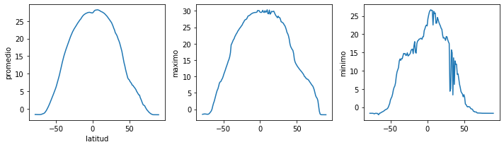
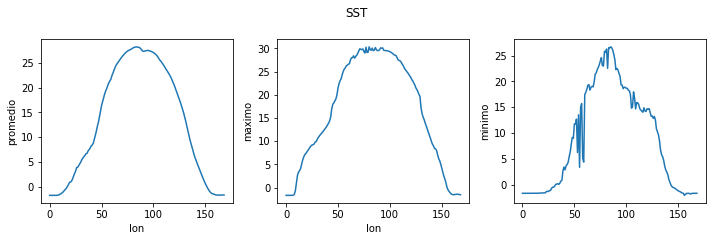

Visualizar datos en Python
Visualizar datos en Python#
# Como hacer varias gráficas en una figura
import numpy as np # libreria que procesa matricez
import pandas as pd # librearia tambien procesa matricez
import netCDF4 as nc
# La liberia mas usada para graficar datos
import matplotlib.pyplot as plt # importamos el módulo pyplot
from matplotlib.dates import date2num, num2date, datetime
fileobj = nc.Dataset('shared/ERA5/ERA5_Coarse.nc') # importando el archivo
sst = fileobj['sst'][:] # Leyendo las variables del archivo
sst = sst - 273.15 # convertiendo a Celsius de Kelvin
lon = fileobj['longitude'][:]
lat = fileobj['latitude'][:]
time = fileobj['time']
print(sst.shape)
(756, 180, 360)
time
<class 'netCDF4._netCDF4.Variable'>
int32 time(time)
long_name: time
units: hours since 1900-01-01
calendar: gregorian
unlimited dimensions:
current shape = (756,)
filling on, default _FillValue of -2147483647 used
image = plt.imshow(sst[0])
image = plt.imshow(sst[0]) # imshow es una manera rápida de ver matriz 2D
plt.colorbar()n # vean la libreria cmocean
# plt.show()
<matplotlib.colorbar.Colorbar at 0x7fb9c105b8b0>
# aqui graficamos el tiempo 0 todos los renglonesn(latitud) y todas las columnas longitud
fileobj['sst']
<class 'netCDF4._netCDF4.Variable'>
int16 sst(time, latitude, longitude)
_FillValue: -32767
units: K
long_name: Sea surface temperature
add_offset: 289.4649014722902
scale_factor: 0.0006169772945977599
missing_value: -32767
unlimited dimensions:
current shape = (756, 180, 360)
filling on
fileobj['time']
<class 'netCDF4._netCDF4.Variable'>
int32 time(time)
long_name: time
units: hours since 1900-01-01
calendar: gregorian
unlimited dimensions:
current shape = (756,)
filling on, default _FillValue of -2147483647 used
plt.imshow(sst.mean(0)) # la dimensión 0 es el tiempo
plt.colorbar()
<matplotlib.colorbar.Colorbar at 0x7fb9c0f31730>
# que podemos decir de esta gráfica? Cuantos años
time
<class 'netCDF4._netCDF4.Variable'>
int32 time(time)
long_name: time
units: hours since 1900-01-01
calendar: gregorian
unlimited dimensions:
current shape = (756,)
filling on, default _FillValue of -2147483647 used
var = datetime.datetime.strptime('1900-01-01 00:00:00', '%Y-%d-%m %H:%M:%S')
ref = date2num(var)
time = fileobj['time'][:] / 24 + ref
# xarray
print(num2date(time[0]))
print(num2date(time[-1]))
1959-01-01 00:00:00+00:00
2021-12-01 00:00:00+00:00
print(num2date(time[0]))
print(num2date(time[1]))
1959-01-01 00:00:00+00:00
1959-02-01 00:00:00+00:00
# Ahora veamos el promedio de temperatura sobre todas las longitudes y todo el tiempo)
# Podemos en un mismo renglón calcular el promedio sobre tiempo y longitud
sst_m_lon = np.mean(sst, axis=2).mean(axis=0)
sst_m_lon.shape
(180,)
print(lat.shape)
(180,)
plt.plot(lat, sst_m_lon)
[<matplotlib.lines.Line2D at 0x7fb9c1226880>]

plt.plot(lat, sst_m_lon) # que podemos decir al respecto
[<matplotlib.lines.Line2D at 0x7fb9c3568a30>]
plt.plot(sst_m_lon, lat) # que podemos decir al respecto
plt.xlabel('Temperatura C')
plt.ylabel('Latitud')
Text(0, 0.5, 'Latitud')
sst_mean = sst.mean(axis=0) # promedio en dimensión 0 que es el tiempo
print(sst_mean.shape)
print(lat.shape)
print(lon.shape)
(180, 360)
(180,)
(360,)
fig = plt.figure(figsize=(10.0, 3.0)) # fig es el nombre de mi figura
# 1 renglon y 3 columnas
axes1 = fig.add_subplot(1, 3, 1) # graficas dentro de la figure posicion 1
axes2 = fig.add_subplot(1, 3, 2) # posicion 2
axes3 = fig.add_subplot(1, 3, 3) # posicion 3
axes1.set_ylabel('promedio')
axes1.set_xlabel('latitud')
axes1.plot(lat, np.mean(sst_mean, axis=1))
axes2.set_ylabel('maximo')
axes2.plot(lat, np.max(sst_mean, axis=1))
axes3.set_ylabel('minimo')
axes3.plot(lat, np.min(sst_mean, axis=1))
fig.tight_layout()# grafica a la figura mas bonita
plt.savefig('sst.pdf') # se utilizan comillas y se puede utilizar diferentes formato
plt.show()

fig = plt.figure(figsize=(10.0, 3.0)) # labels y axis
axes1 = fig.add_subplot(1, 3, 1)
axes2 = fig.add_subplot(1, 3, 2)
axes3 = fig.add_subplot(1, 3, 3)
axes1.set_ylabel('promedio')
axes1.plot(np.mean(sst_mean, axis=1))
axes1.set_xlabel('lon')
axes2.set_ylabel('maximo')
axes2.plot(np.max(sst_mean, axis=1))
axes2.set_xlabel('lon')
axes3.set_ylabel('minimo')
axes3.plot(np.min(sst_mean, axis=1))
axes1.set_xlabel('lon')
fig.tight_layout()
plt.suptitle('SST', y=1.1)
plt.savefig('sst.png')
plt.show()
